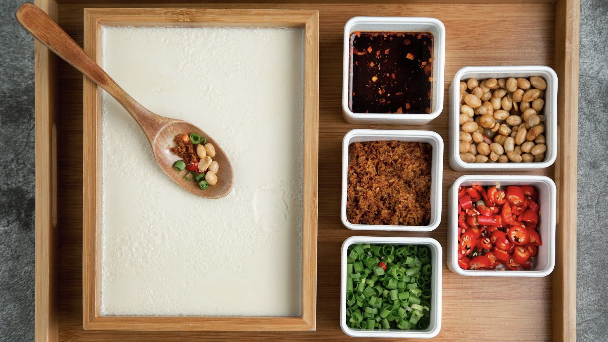

西坝豆腐，是四川乐山的传统名菜。从乐山大佛顺岷江而下20多公里处，有一座千年古镇五通桥区西坝镇。早在明朝万历年间，镇上的人就有吃豆腐之俗，而真正使西坝豆腐声名远播的，是老字号“庆元店”的第六代掌勺人杨俊华师傅。 西坝古镇，山清水秀，景色宜人，特别是那清冽的溪水，是磨制豆腐的天然水汁。西坝豆腐历史悠久，于东汉时期传入，精于唐宋时期，有文字可查，则兴盛于明朝万历(公元1573～1620)年间，距今已有400多年的历史。

传说某一年，八仙之一的张果老、吕洞宾、曹国舅云游至此，见树木葱茏的山林间一块平坦的巨石，正好下象棋，于是张果老和曹国舅摆开战场厮杀。晌午,肚中饥饿，一旁观战的吕洞宾遂向附近山民讨吃喝。纯朴的山民便推豆花招待，不想几个时辰过去，豆浆始终煮不开。吕洞宾掐指一算，原来是一修炼成精的金龟作怪，因为二仙下棋占了它每日晒太阳的巨石。于是吕洞宾一剑刺向沐溪河，金龟受惊升到天空，与吕洞宾展开激战，直杀得昏天暗地，不决高下。杀至凉水井，见一老妪在此纳凉，吕洞宾向她讨水喝，喝过之后功力倍增，斩杀金龟于真武山下。如今，西坝镇有三仙坝、棋盘石、磨刀沟、金龟嘴地名。据传凉水井就是观音菩萨（老妪）洒下的圣水，滋养出西坝三绝——西坝豆腐、西坝生姜、西坝糯米酒。据《嘉州府志》记载，与赵匡胤比剑论道于华山的陈抟老祖，曾隐居于西坝境内的圆通寺，炼丹未成却炼出了西坝豆腐。
西坝豆腐在选、泡、磨、烧、滤、包的六道工序，道道都有特别的讲究。其中洁净是首要，这就是为什么西坝豆腐比任何地方的豆腐都更洁白、细嫩、绵软、化渣的原因。通过烧、炸、炒、熘、蒸、拌，烹饪出360多种菜肴，荟萃成精妙的豆腐宴席，让人惊叹不已。有文人品过西坝豆腐赞道：“四川豆腐甲天下，西坝豆腐冠四川；洁白如玉细若脂，几乎舌头一起咽。”；“一品豆腐宴，尝尽天下鲜，美味甲环宇，疑似作神仙。”